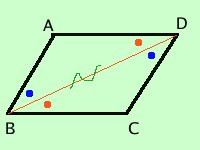
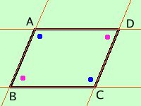

|
In un parallelogramma gli angoli opposti sono congruenti e viceversa Se in un quadrilatero gli angoli opposti sono congruenti allora il quadrilatero e' un parallelogramma Dimostriamo prima il teorema diretto e poi il teorema inverso teorema diretto
Dimostrazione (quasi uguale alla precedente) congiungo i punti B e D ed ottengo i due triangoli ABD e BDC; essi hanno: 
Per quanto riguarda gli altri due angoli basta osservare che sono somma di angoli congruenti e quindi congruenti come volevamo teorema inverso
Dimostrazione  Essendo ABCD un quadrilatero la somma degli angoli interni vale due angoli piatti se gli angoli sono due a due congruenti allora due angoli susseguentisi valgono un angolo piatto Ad esempio consideriamo DAB^ + ABC^ = angolo piatto ma gli angoli DAB^ e ABC^ sono angoli coniugati interni rispetto alle rette AD e BC tagliate dalla trasversale AB ed essendo congruenti ne segue che le due rette sono parallele. Puoi fare lo stesso ragionamento per dimostrare che le altre due rette AB e CD sono parallele Avendo dimostrato sia il teorema diretto che quello inverso i due fatti, parallelogramma e angoli opposti congruenti, saranno equivalenti |